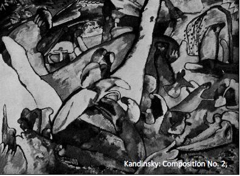
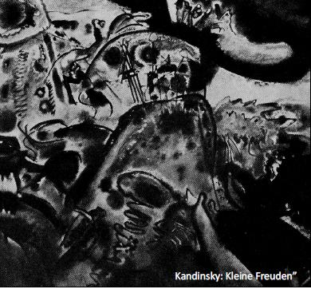

SONUÇ
Kitaptaki ilk beş resim, resimdeki yapıcı çabaların serüvenini gözler önüne sermektedir. Bu çabalar iki bölümde incelenebilir:
(1) Açık ve basit bir forma göre düzenlenen sade kompozisyon. Bu tür kompoziyona melodik diyorum.
(2) Çeşitli formlardan meydana gelen ve neredeyse tamamen, ana bir forma göre düzenlenmiş karmaşık kompozisyon. Ana formun dıştan kavranması zor olabilir, bu yüzden de güçlü bir içsel değere sahiptir. Bu tür kompoziyona senfonik diyorum.
Bu ikisinin arasında, melodik ilkenin hâkim olduğu çeşitli formlar bulunur. Bu formların tarihsel gelişimi müzikteki gelişmelere paralel olmuştur.
Eğer kişi, melodik bir kompozisyon örneğini değerlendirirken, maddi yönü unutup, bütünün sanatsal nedenini incelerse, primitif geometrik formlarla ya da ortak bir hareket doğrultusunda düzenlenmiş basit çizgilerle karşılaşır. Bu ortak hareket, çeşitli bölümlerde tekrarlanır ve bir çizgi ya da formla çeşitlenebilir. Bu tip tekil çeşitlemeler farklı amaçlara hizmet ederler. Örneğin, ani bir duruş ya da bir müzik terimine başvuracak olursak, fermata görevi görebilirler.[72] Kompozisyonu oluşturan her formun basit bir içsel değeri, onun da bir melodisi vardır. Bu nedenle, bu kompozisyonu melodik diye adlandırıyorum. Bu tür kompozisyon, Cézanne ve sonrasında Hodler sayesinde yeni bir yaşama kavuşmuş ve ritmik adını almıştır. Ritmik teriminin sınırları bellidir. Müzikte ve doğada, dolayısıyla resimde de her yapının kendine has bir ritmi vardır. Bu ritim doğada pek belirgin değildir; çünkü amacını hemen anlayamayız. O zaman da ritimsiz deriz. Yani ritmik ya da ritimsiz terimleri de, gerçek varlığı olmayan armoni ve uyumsuzluk gibi tamamıyla geleneksel terimlerdir.[73]
Geçmişe ait sayısız resimde ve tahta baskısında, güçlü bir senfonik kompozisyon tadına sahip karmaşık ritmik kompozisyona rastlanır. Eski Alman ustalarının, İranlıların ve Japonların eserleri, Rus ikonaları vs buna örnektir.[74]
Bu eserlerin neredeyse tümünde, senfonik kompozisyon melodik olanla içiçe geçmiş haldedir. Demek ki bu temelde hareketsizliğe ve dengeye dayalı bir kompozisyondur. Akla hemen Mozart ve Beethovenın koral kompozisyonları gelir. Tüm bu eserler, gotik bir katedralin görkemli ve muntazam mimarisine sahiptirler ve geçiş dönemine aittirler. Melodik unsurun nadiren belirdiği ve ikincil bir rol oynadığı yeni senfonik kompozisyona örnek olarak kitapta dört resmimin reprodüksiyonlarına yer verdim.
Resimler, üç ayrı esin kaynağını temsil ediyorlar:
(1) Dış doğaya ilişkin, tamamıyla sanatsal bir formla ifade edilen doğrudan izlenim. Buna izlenim diyorum.
(2) İçsel karakterin, yani maddi olmayan doğanın, büyük ölçüde bilinçsiz ve kendiliğinden ifadesi. Buna doğaçlama diyorum.
(3) Yavaş yavaş biçimlenen ve ancak olgunlaştıktan sonra dile gelen içsel duygunun ifadesi. Buna kompozisyon diyorum. Bunda us, bilinç ve amaç çok önemli bir rol oynar. Ama hesaplamayla yapılabilecek bir şey yoktur, her şey duygudan gelir. Sabırlı okur, eserimin temelindeki esas yapıyı kolayca yakalayacaktır.
Son olarak, mantıklı ve bilinçli kompozisyon çağına, ressamın, eserinin yapısal olduğunu söylemekten gurur duyacağı bir döneme hızla yaklaştığımızı belirtmek isterim. Bu, İzlenimcilerin, hiçbir şeyi açıklayamayacakları ve sanatın onlara esin yoluyla geldiği yönündeki iddialarına ters düşecektir. Önümüzde bilinç çağı var ve resimdeki bu yeni ruh, düşüncenin ruhuyla elele, ruhsal öncüler çağına doğru ilerliyor.

